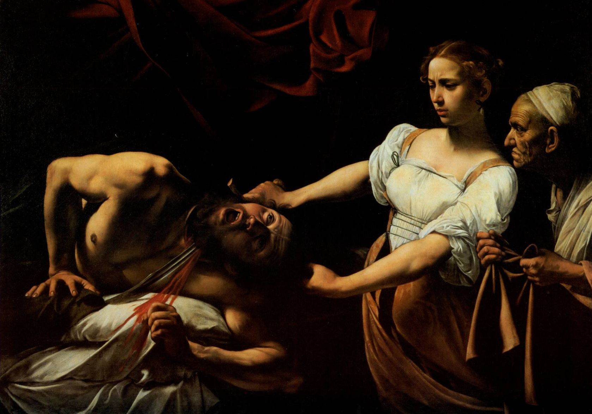
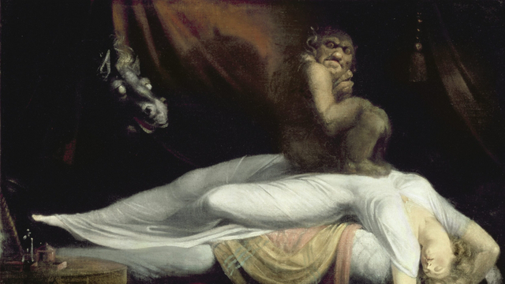
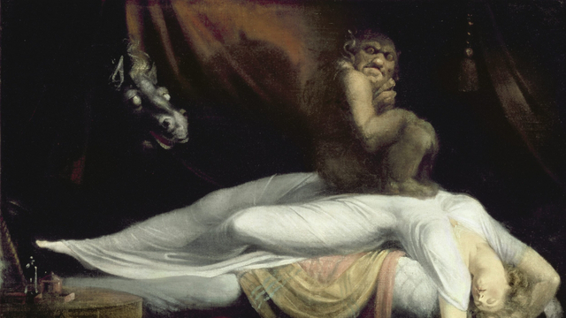
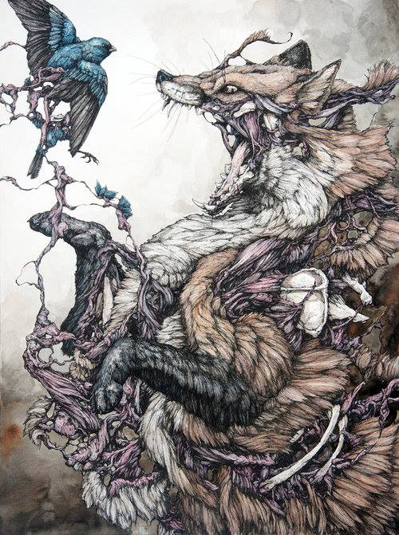
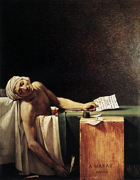
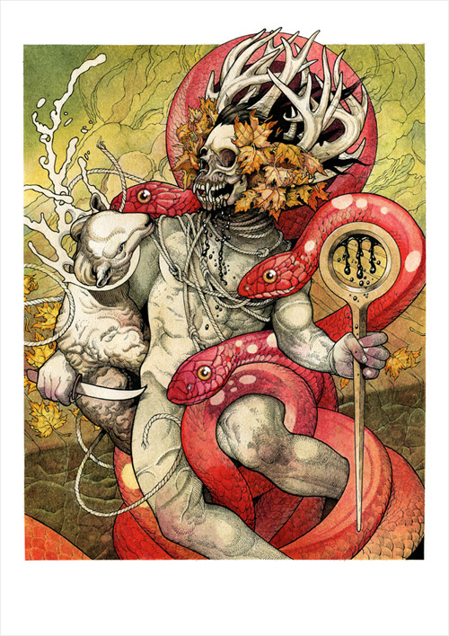
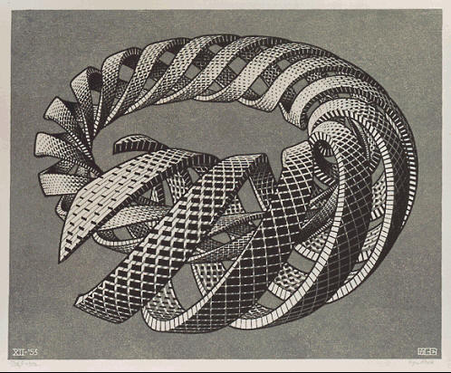
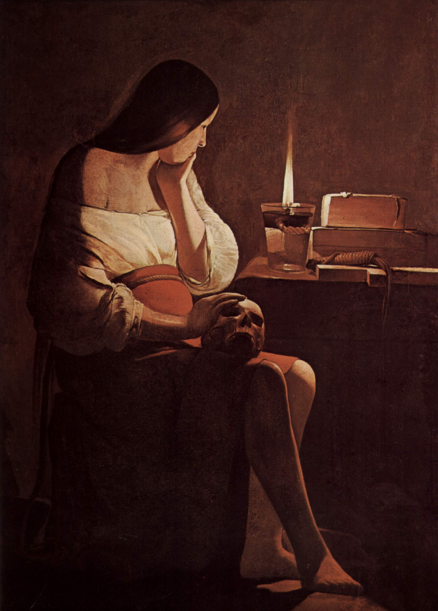

Galerie d'images

Le Caravage- Judith
 Brueghel L'ancien- La Tour de Babel
Brueghel L'ancien- La Tour de Babel
Brueghel L'ancien- La Tour de Babel
 Géricault- Le Radeau de la Méduse

Johan Heinrich Fussli- Le Cauchemard
Géricault- Le Radeau de la Méduse

Johan Heinrich Fussli- Le Cauchemard

Lauren Marx- Red Fox

David- La Mort de Marat

John Baizley- Serpents Unleashed
 Picasso- Guernica
Picasso- Guernica
Picasso- Guernica

Escher- spiral toroid

George De La Tour- Madelaine Pénitente